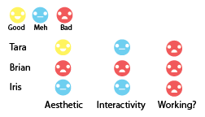

Audience Test Results
Here are some of the notes I jotted down when talking to the people who tested my site.
Tara:The color scheme is pretty cute and simple with it’s bright pastels, but it’s still readable. The writing is HILARIOUS. Heart Symbol. Oh, just finish your other sections is fine! How’s the class going? Some people in our class are using it and they might be of help to you?
Brian: Everything is not working… +++++++++ is the page numbers? Confusion about that. Site is straightforward. Needs to be more interactive? Use Popups loading screen? 90s feel… Basic structure. Add web structure: text is too long. Shorten it out! Change some of the colors.
Iris: Loves the cupcake… Likes the idea of no sign in. Add more padding (Pad your text out!). Make heading in more bold font… body text too big. Change padding for importance hierarchy. Spacing between text shows no hierarchy. Fix the nav onto the screen? Maybe keep the pointillism in the banner?